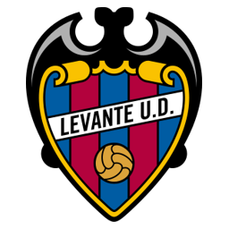
LEEl eterno luchador valenciano
Levante UD
1909
Año de fundación del club
Granotas
Una breve historia
Fundado en 1909, el Levante UD ha compartido ciudad con el Valencia CF desde siempre, jugando habitualmente el papel de aspirante. En la temporada 2020/21 rozó la clasificación europea, una de sus mejores campañas históricas.
Fieles a los colores
de Valencia
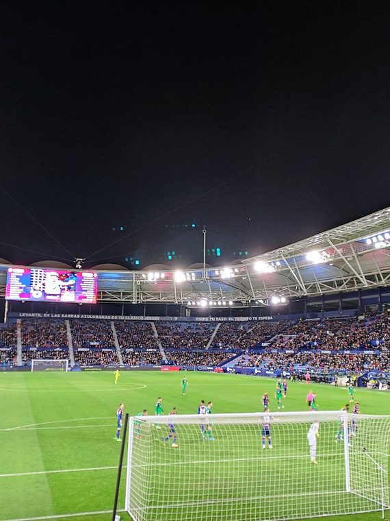
📷Foto pendiente
(levante-1.jpg)';" />
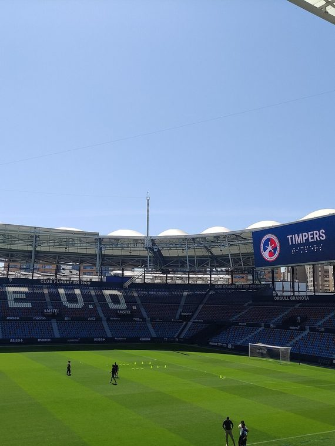
📷Foto pendiente
(levante-2.jpg)';" />
Títulos y logros
Momentos que hicieron historia
★
Semifinalista de la Copa del Rey en varias ocasiones
★
Mejores posiciones históricas en LaLiga en la década de 2010
★
Club centenario con fuerte identidad local
La rivalidad
El duelo que enciende a la afición
Temporada 2026 / 27
Plantilla del primer equipo
Datos de ejemplo — reemplázalos con la plantilla real en data/teams.js.
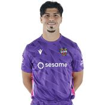
🧑';" /> P. Campos Portero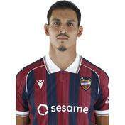
🧑';" /> Mandi Defensa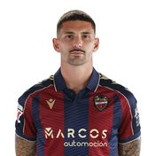
🧑';" /> Dela Defensa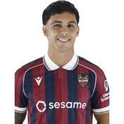
🧑';" /> Hugo Sotelo Centrocampista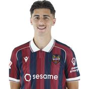
🧑';" /> Requena Centrocampista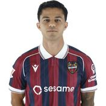
🧑';" /> R. Brugué Delantero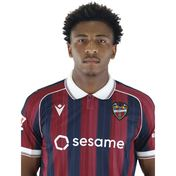
🧑';" /> Yanis Musuayi Delantero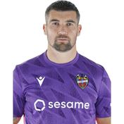
🧑';" /> Ryan Portero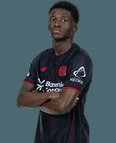
🧑';" /> Axel Tape Centrocampista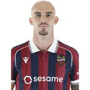
🧑';" /> O. Rey Centrocampista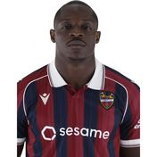
🧑';" /> Etta Eyong Delantero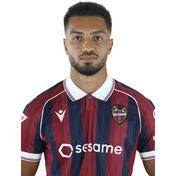
🧑';" /> Toljan Defensa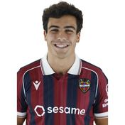
🧑';" /> Manu Sánchez Defensa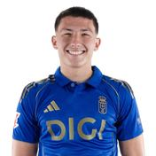
🧑';" /> Thiago Centrocampista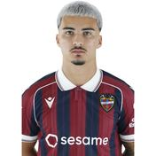
🧑';" /> P. Cortes Centrocampista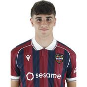
🧑';" /> Nacho Perez Defensa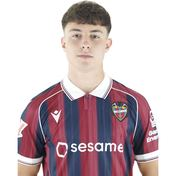
🧑';" /> Marc Santos Defensa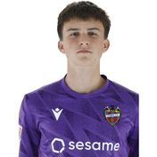
🧑';" /> Ihor Galdin Portero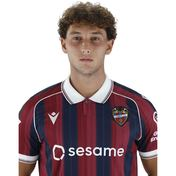
🧑';" /> Calatrava Centrocampista